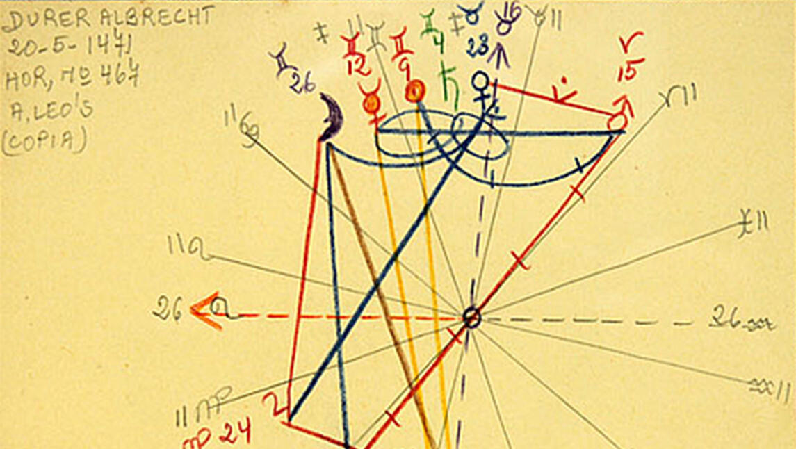

Muchas veces me preguntan -porque no entienden en los climas o en las revoluciones- cuando digo: “Aries, tenés a Tauro en la Casa II”. Si tenés el Ascendente en Aries, claramente tenés a Tauro en Casa II, ¿pero por qué Flor dice que Aries de Sol TAMBIÉN tiene a Tauro en la Casa II?
Una cosa es la Carta Astral o Natal que se basa en la hora y el lugar donde nacimos además de la fecha, lo que marca justamente el ascendente que va a dividir las diferentes casas de la Carta Astral. Entonces, si tenemos el ascendente en Sagitario por la hora y el lugar en que nacimos, desde nuestra Carta Natal o Astral Sagitario es nuestra Casa I, por lo que nuestra Casa II estará en Capricornio, nuestra Casa III en Acuario, nuestra Casa IV en Piscis, nuestra Casa V en Aries, y así sucesivamente.
Ahora bien, está lo que se llama “Carta Solar”. Con esta Carta es como los astrólogos arman los climas y los horóscopos. La Carta Solar toma al signo del Sol como si fuese la primera Casa. Entonces, desde nuestra Carta Astral o Natal tenemos ascendente en Sagitario, y nuestro Sol puede que esté en Casa V, pero desde nuestra Carta Solar, nuestro Sol en Aries, está en la Casa I porque tenemos Sol en Aries y la Casa I siempre es la Casa del yo.
La diferencia es que, al tener al Sol en un determinado signo, nos identificamos naturalmente con ese, pero el signo de nuestro Ascendente es un Yo a descubrir. Tenemos que lograr identificarnos con ese signo, lo que nos va a llevar todo un proceso a lo largo de nuestra vida. Por ejemplo, siguiendo el caso de recién, siendo de Aries pero con Ascendente en Sagitario, nos vamos a identificar con Aries y no tanto con Sagitario, porque tenemos que descubrir que somos Casa I Sagitario, porque la Casa I es una correspondencia de Aries -es el “yo soy”-, entonces la Casa I siempre es "yo soy", pero cuando se trata de nuestro Ascendente, tenemos que descubrir que somos esa energía.
Por eso la Carta Solar es súper importante también. Porque habla del carácter del signo, y es por esto que para entender bien a un signo tenemos que conocer su Carta Solar. La Carta Solar de un ariano, como si fueran casas perfectas, vamos a hacer la correspondencia de los signos: en su Casa I está Aries, porque es la Casa del “yo soy”. La Carta Solar no la vemos en papel, la tenemos que dibujar en nuestra mente, poniendo a nuestro Signo Solar en Casa I. Entonces desde nuestra Carta Solar, si nuestro Sol está en Aries, vamos a poner ese signo en la Casa I, por lo que nuestra Casa II va estar en Tauro, nuestra Casa III está en Géminis, nuestra Casa IV está en Cáncer, y así seguimos con todas las casas y sus correspondientes signos. Y esto nos va a hablar del carácter de toda persona, en este caso, del signo de Aries.
Los tránsitos en el cielo se toman en cuenta tanto para la Carta Astral o Natal como para la Carta Solar. Por ejemplo, actualmente está Urano en Tauro; entonces, todos los arianos, no importa qué ascendente tengan, están revolucionando su forma de ganar dinero (porque tienen a Tauro en su Casa II); están diciendo: "yo quiero cambiar de trabajo y la forma en que gano dinero". Muchos arianos pueden, incluso, estar incursionando en la astrología, porque Urano rige la astrología, y pueden estar ahora ganando dinero de una manera más libre, más auténtica, y más creativa. O a través de la tecnología, o el trabajo con grupos o en redes e internet.
Por lo tanto, las personas Aries de Sol como las personas Aries de Ascendente están teniendo el tránsito de Urano en Tauro en su Casa II. La diferencia es que el que tiene Ascendente en Aries y tiene a Tauro en la Casa II de su Carta Astral tenga también, tal vez, un planeta en su Casa II en Tauro. Entonces, tal vez, Urano ahora está tocando además ese planeta; eso es algo particular de la propia Carta Astral o Natal. Pero a nivel general, todos los Arianos y los Ascendentes en Aries están teniendo a Urano en la Casa II.
La diferencia entre una Carta Solar y una Carta Astral es que todos los tránsitos que son en base a nuestro Sol, y por eso se sienten totalmente. Seguramente los arianos están revolucionados y lo sienten, porque es un tránsito en base a su Sol. En cambio, lo que ocurre en base a nuestro ascendente o a nuestra Carta Natal o Astral, a veces no es tan sencillo de descubrir, sino que tenemos que averiguar más, tenemos que hacer un trabajo, porque la Carta Astral justamente es un descubrir que somos esa rueda.
Sabemos que somos la rueda de nuestro Sol, sabemos que somos nuestra Carta Solar, pero tenemos que descubrir que somos nuestra Carta Natal o Astral.
Por ejemplo, Géminis de Sol tiene a Leo en la Casa III. ¿Por qué? Porque Géminis es el león de la comunicación. Justamente Géminis ilumina con la palabra, es el rey de la comunicación. Sin embargo, los Ascendentes en Géminis no saben que tienen a Leo en la Casa III, tienen que descubrir que son Géminis, tienen que descubrir que tienen a Leo en la Casa III, tienen que poner más energía, trabajarla un poco más.
Todos los signos, desde nuestra Carta Solar y los tránsitos que vivimos desde nuestro Sol, los vivimos de manera natural, los sentimos siempre y por eso siempre les digo que tienen que escuchar los climas o los horóscopos que se hacen primero para el signo de su Sol y después para el signo de su Ascendente. Por último, para que quede bien claro: el Sol es identidad y presencia, mientras que el Ascendente es identidad y presencia a descubrir.